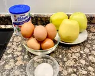
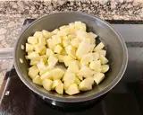
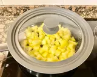
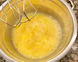
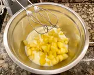
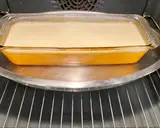
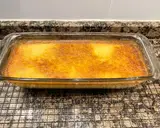

Preparamos todos los ingredientes. Precalentamos el horno a 180 grados calor arriba y abajo.
Molde a usar, rectangular 28 cm de largo por 12 cm de ancho por 7 cm de alto. Pelar las manzanas, trocearlas. En una sartén ponemos las manzanas, el azúcar, mezclar.
Incorporar el agua y mezclar muy bien, poner fuego medio-bajo, tapar con tapadera y dejar que se pongan muy blanditas, mezclar hasta que estén terminadas. Nuestras manzanas están muy blanditas y han caramelizado, retirar del fuego y dejar que se enfríen.
En un bol ponemos los huevos y mezclamos sólo para incorporarlos, reservar.
En un bol ponemos la leche condensada y las manzanas caramelizadas, batir muy bien hasta formar un puré (si las manzanas no les han quedado muy blandas pongan todo en una licuadora y batan bien). Nos tiene que quedar con una textura fina. Añadir los huevos batidos.
Mezclar con globo manual, sólo vamos a incorporar los ingredientes, no batan en exceso. Poner en el molde preparado que estará dentro de una bandeja para hacer el baño María. Meter en el horno y una vez dentro añadimos agua hirviendo hasta llegar un poco menos de la 1/2 del molde. Dejaremos cocer durante 60 minutos pincharemos el centro del flan con aguja antes de apagar el horno (si ven que durante la cocción se dora mucho por la superficie tapen con papel de aluminio).
Pasado el tiempo este es su aspecto. Apagar el horno, cerrar la puerta y lo vamos a dejar dentro hasta que el agua de la bandeja esté templada.
Pasado el tiempo este es su aspecto. Dejar enfriar por completo a temperatura ambiente, tapar con film transparente y meter en el frigorífico mínimo 6 horas.
Desmoldar, poner sobre plato de presentación, decorar con cerezas en almíbar.